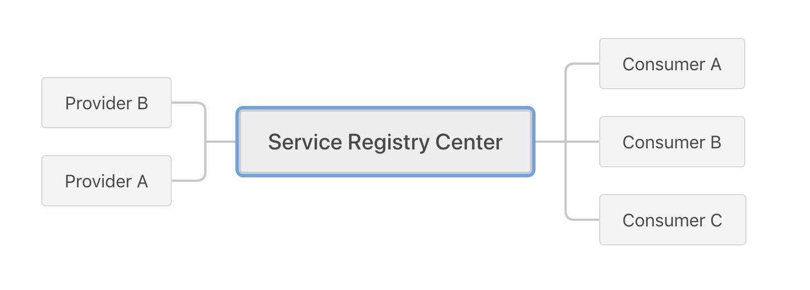

- 00 开篇导读.md.html
- 01 以真实“商场停车”业务切入——需求分析.md.html
- 02 具象业务需求再抽象分解——系统设计.md.html
- 03 第一个 Spring Boot 子服务——会员服务.md.html
- 04 如何维护接口文档供外部调用——在线接口文档管理.md.html
- 05 认识 Spring Cloud 与 Spring Cloud Alibaba 项目.md.html
- 06 服务多不易管理如何破——服务注册与发现.md.html
- 07 如何调用本业务模块外的服务——服务调用.md.html
- 08 服务响应慢或服务不可用怎么办——快速失败与服务降级.md.html
- 09 热更新一样更新服务的参数配置——分布式配置中心.md.html
- 10 如何高效读取计费规则等热数据——分布式缓存.md.html
- 11 多实例下的定时任务如何避免重复执行——分布式定时任务.md.html
- 12 同一套服务如何应对不同终端的需求——服务适配.md.html
- 13 采用消息驱动方式处理扣费通知——集成消息中间件.md.html
- 14 Spring Cloud 与 Dubbo 冲突吗——强强联合.md.html
- 15 破解服务中共性问题的繁琐处理方式——接入 API 网关.md.html
- 16 服务压力大系统响应慢如何破——网关流量控制.md.html
- 17 集成网关后怎么做安全验证——统一鉴权.md.html
- 18 多模块下的接口 API 如何统一管理——聚合 API.md.html
- 19 数据分库后如何确保数据完整性——分布式事务.md.html
- 20 优惠券如何避免超兑——引入分布式锁.md.html
- 21 如何查看各服务的健康状况——系统应用监控.md.html
- 22 如何确定一次完整的请求过程——服务链路跟踪.md.html
- 23 结束语.md.html
- 捐赠
06 服务多不易管理如何破——服务注册与发现
经过上一篇系统性的介绍 Spring Cloud 及 Spring Cloud Alibaba 项目，相信你已经对这两个项目有个整体直观的感受，本篇开始正式进入本课程的第二部分，一起进入业务的开发阶段。
服务调用问题
在分析业务需求时，其中有个简单的功能点：会员可以开通月卡，开通月卡的同时，需要增加相应的积分。开通月卡功能在会员服务模块维护，但增加积分功能在积分服务模块维护，这就涉及到两个模块间的服务调用问题。
单实例情况：可以采用点对点的 HTTP 直接调用，采用 IP + Port + 接口的形式进行。也可以对外暴露 WebService 服务供外部模块调用，但 WebService 的形式 显示比 HTTP的形式稍重一些，在实际的业务开发过程中，越来越的产品开发采用轻量级的 HTTP 协议进行数据交互。如果模块增多，将会形成蜘蛛网的形式，非常不利于开发维护。
多实例的情况：为应对服务的压力，采用多实例集群部署已成为简捷易用的解决方案。仅仅多实例部署后，直接面临一个问题，调用方如何知晓调用哪个实例，当实例运行失败后，如何转移到别的实例上去处理请求？如果采用了负载均衡，但往往是静态的，在服务不可用时，如果动态的更新负载均衡列表，保证调用者的正常调用呢？
面对以上两种情况，服务注册中心的需求迫在眉捷，将所有的服务统一的、动态的管理起来。
服务注册中心
服务注册中心作分布式服务框架的核心模块，可以看出要实现的功能是服务的注册、订阅，与之相应的功能是注销、通知这四个功能。

所有的服务都与注册中心发生连接，由注册中心统一配置管理，不再由实例自身直接调用。服务管理过程大致过程如下：
1、服务提供者启动时，将服务提供者的信息主动提交到服务注册中心进行服务注册。
2、服务调用者启动时，将服务提供者信息从注册中心下载到调用者本地，调用者从本地的服务提供者列表中，基于某种负载均衡策略选择一台服务实例发起远程调用，这是一个点到点调用的方式。
3、服务注册中心能够感知服务提供者某个实例下线，同时将该实例服务提供者信息从注册中心清除，并通知服务调用者集群中的每一个实例，告知服务调用者不再调用本实例，以免调用失败。
在开发过程中有很多服务注册中心的产品可供选择：
- Consul
- Zookeeper
- Etcd
- Eureka
- Nacos
比如 Dubbo 开发时经常配合 Zookeeper 使用，Spring Cloud 开发时会配合 Eureka 使用，社区都提供相当成熟的实施方案，本案例中服务注册中心采用 Nacos 来进行实战，其它注册中心的使用，有兴趣的朋友可以课下稍做研究，基本应用还是比较简单的。
Nacos 应用
官网地址：https://nacos.io/en-us/，由阿里开源，一个更易于构建云原生应用的动态服务发现、配置管理和服务管理平台，已经作为 Spring Cloud Alibaba 的一个子项目，更好与 Spring Cloud 融合在一起。在关 Nacos 的详细信息可打开官网进行了解，这里不做过多讲述。下面直接进入我们的应用一节。
安装 Nacos
本次采用 1.1.4 版本：nacos-server-1.1.4.tar.gz，（最新版本中已集成权限管理功能）本次测试将采用单机版部署，下载后解压，直接使用对应命令启动。
tar -xvf nacos-server-$version.tar.gz cd nacos/bin sh startup.sh -m standalone (standalone代表着单机模式运行，非集群模式)
启动日志如下：
appledeMacBook-Air:bin apple$ ./startup.sh -m standalone
/Library/Java/JavaVirtualMachines/jdk1.8.0_151.jdk/Contents/Home/bin/java -Xms512m -Xmx512m -Xmn256m -Dnacos.standalone=true -Djava.ext.dirs=/Library/Java/JavaVirtualMachines/jdk1.8.0_151.jdk/Contents/Home/jre/lib/ext:/Library/Java/JavaVirtualMachines/jdk1.8.0_151.jdk/Contents/Home/lib/ext:/Users/apple/software/nacos/plugins/cmdb:/Users/apple/software/nacos/plugins/mysql -Xloggc:/Users/apple/software/nacos/logs/nacos_gc.log -verbose:gc -XX:+PrintGCDetails -XX:+PrintGCDateStamps -XX:+PrintGCTimeStamps -XX:+UseGCLogFileRotation -XX:NumberOfGCLogFiles=10 -XX:GCLogFileSize=100M -Dnacos.home=/Users/apple/software/nacos -Dloader.path=/Users/apple/software/nacos/plugins/health -jar /Users/apple/software/nacos/target/nacos-server.jar --spring.config.location=classpath:/,classpath:/config/,file:./,file:./config/,file:/Users/apple/software/nacos/conf/ --logging.config=/Users/apple/software/nacos/conf/nacos-logback.xml --server.max-http-header-size=524288
nacos is starting with standalone
nacos is starting，you can check the /Users/apple/software/nacos/logs/start.out
日志末显示 “staring” 表示启动成功，打开http://127.0.0.1:8848/nacos，输入默认的用户名 nacos、密码 nacos，就可以看到如下界面。

可以看到 Nacos 的提供的主要功能已经在左侧菜单中标示出来，本次我们只用到服务管理功能，配置管理我们下个章节再讲。
关闭服务也很简单，执行提供的相应脚本即可。
Linux / Unix / Mac 平台下 sh shutdown.sh
Windows 平台下 cmd shutdown.cmd 或者双击 shutdown.cmd 运行文件。
到此，服务注册中心已经准备完毕，下面我们将服务注册到注册中心来。
服务中应用 Nacos
1、首先在父项目引入 Spring Cloud，Spring Cloud Alibaba jar 包的依赖，参考Spring Boot的引入方式。
考虑到三个项目之间的版本问题，本次采用 Greenwich.SR4 版本。
父项目 parking-project 的 pom.xml中增加如下配置：
<properties>
<spring-cloud.version>Greenwich.SR4</spring-cloud.version>
<spring-cloud-alibaba.version>2.1.0.RELEASE</spring-cloud-alibaba.version>
</properties>
<dependencyManagement>
<dependencies>
<dependency>
<groupId>org.springframework.cloud</groupId>
<artifactId>spring-cloud-dependencies</artifactId>
<version>${spring-cloud.version}</version>
<type>pom</type>
<scope>import</scope>
</dependency>
<dependency>
<groupId>com.alibaba.cloud</groupId>
<artifactId>spring-cloud-alibaba-dependencies</artifactId>
<version>${spring-cloud-alibaba.version}</version>
<type>pom</type>
<scope>import</scope>
</dependency>
</dependencies>
</dependencyManagement>
2、在子模块服务中引入 nacos jar 包，在子模块的 pom.xml 文件中增加如下配置
<dependency>
<groupId>org.springframework.cloud</groupId>
<artifactId>spring-cloud-starter-alibaba-nacos-discovery</artifactId>
<version>0.2.2.RELEASE</version>
</dependency>
<dependency>
<groupId>com.alibaba.nacos</groupId>
<artifactId>nacos-client</artifactId>
</dependency>
模块启动类中加入 @EnableDiscoveryClient 注解，这与使用 Eureka 时，采用注解配置是一致的，此注解基于 spring-cloud-commons ，是一种通用解决方案。
在对应的项目配置文件 application.properties 中增加配置项：
#必须填写application.name，否则服务无法注册到nacos
spring.application.name=card-service/member-service
spring.cloud.nacos.discovery.server-addr=127.0.0.1:8848
启动项目，通过nacos控制台检查服务是否注册到nacos，正常情况下能发现两个服务实例：
由于当前服务是由单机单实例的形式运行，图中标示出服务的集群数目为1、实例数为1、健康实例数为1，如果我们针对同一个服务，启动两实例，注册中心能即时的监控到，并展示出来。操作栏的”示例代码”链接，为我们提供了不同开发语言下的服务使用攻略，还是相当人性化的。在此也可以看出 Nacos 的未来肯定是跨语言的，不能局限在 Java 领域，这与微服务的语言无关性也是契合的。

这里做个测试，在 eclipse 项目 application.properties 配置文件中修改服务端口，保证同一个服务端口不冲突。
server.port=9090
启动3个实例，形成一个 card-service 服务的小集群，可以在控制台配置各个实例的权重，权重不同，在处理请求时响应的次数也会不同，实例的增多，大大提高了服务的响应效率。

至此，我们已经可以将一个服务注册到服务注册中心来统一管理配置，后续的其它服务都可以参照此方式，做好基础配置，将服务统一注册到 Nacos 注册中心管理维护，为后续的服务间调用打下基础。
留个思考动手题
文中我们采用的是单机单实例部署 Nacos 服务，生产环境中肯定不能采用单机模式，会存在单点故障，你能搭建一个真实的多机器实例集群吗？
© 2019 - 2023 Liangliang Lee. Powered by gin and hexo-theme-book.